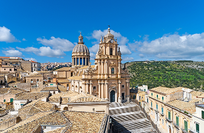
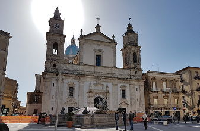
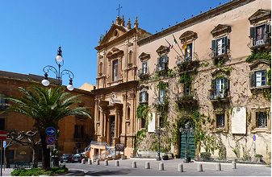

Piazza Duomo
Nel cuore barocco di Ragusa Ibla, Piazza Duomo accoglie il visitatore con la facciata della Cattedrale di San Giorgio.

Ragusa Ibla
Nel cuore barocco di Ragusa Ibla, Piazza Duomo accoglie il visitatore con la facciata della Cattedrale di San Giorgio.

caltanissetta
Piazza Garibaldi è il cuore storico e religioso di Caltanissetta. Dove si trova la Cattedrale di Santa Maria La Nova.

Agrigento
Piazza Pirandello è la piazza principale della città di Agrigento ed è dedicata al celebre scrittore Luigi Pirandello.
Le provincie della Sicilia custodiscono un ricco patrimonio storico e culturale che si riflette soprattutto nelle loro piazze principali. Le piazze siciliane sono il cuore della vita sociale: luoghi di incontro, di mercati e di feste tradizionali, spesso circondate da chiese barocche, palazzi storici e monumenti che raccontano la storia e le tradizioni dell’isola.
scopri di più